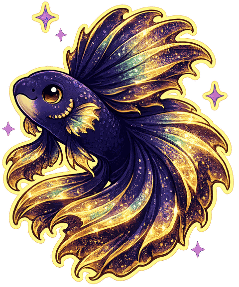

Reading Thai script enables you to determine a word's tone, and therefore its meaning. For example, "mǎa" (rising tone) means "dog", "máa" (high tone) means "horse", and "maa" (mid tone) is the verb "come".
Thai script may look intimidating at first, but it follows a clear logic and can be learned with a systematic approach. This section takes you from nothing to reading real words in twelve steps. This reading course does not just present you with information, but gives you the opportunity to test yourself, and re-test at each step, until you are confident. Tests shuffle every time, so you're recognising sounds and symbols, not memorising an order. You will be reading Thai script in no time. Congratulations for taking this important step of your Thai learning journey.

Thai has no capital letters and no spaces between words — just 42 consonants in everyday use, about 26 vowel shapes, and 5 tones. The tone a word carries is derived from the letters themselves: the consonant’s class (mid, high or low), the vowel, how the syllable ends, and the tone marks.
Hear the five tones on one syllable — tap each:
Until the script is second nature, we show a transliteration next to every Thai word, with an accent on the vowel telling you the tone — the same five you just heard: